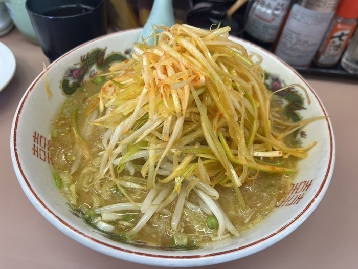
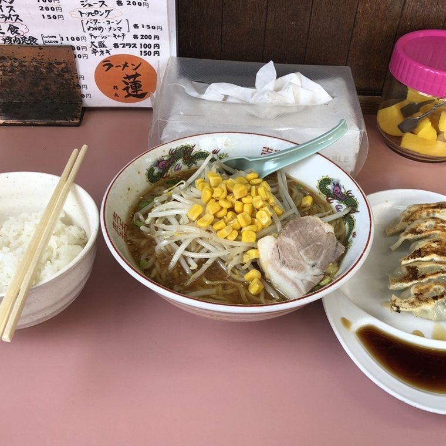
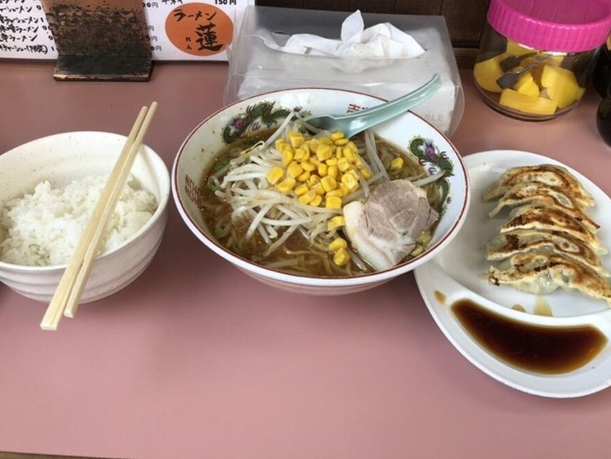
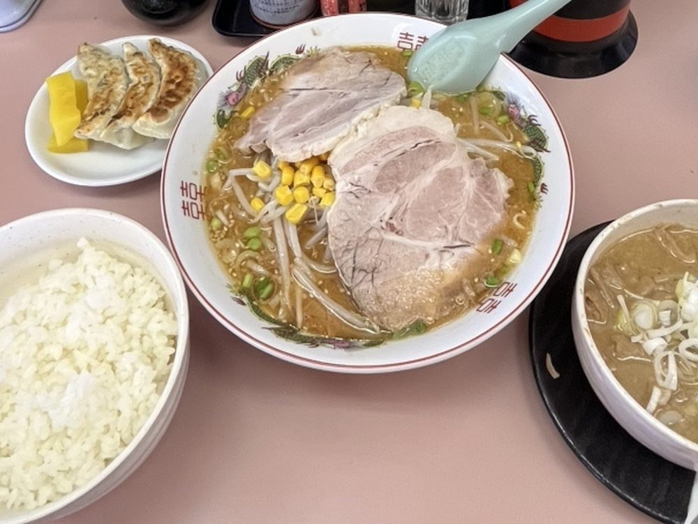
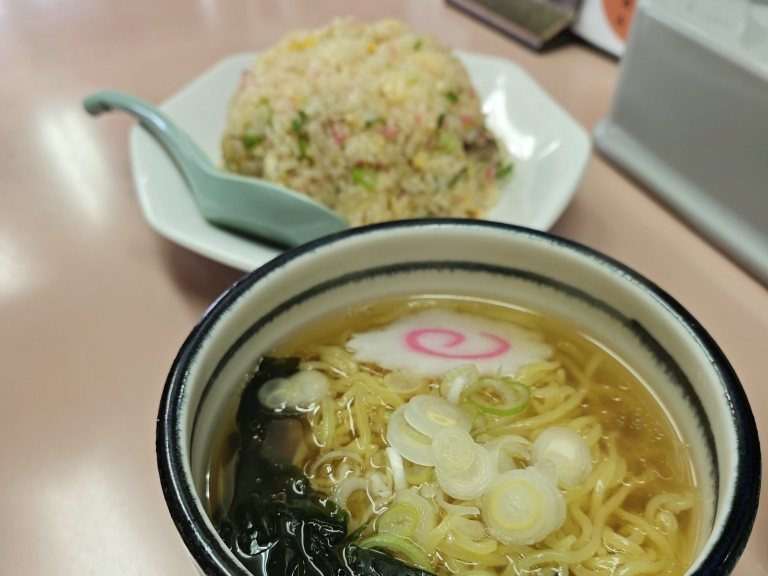
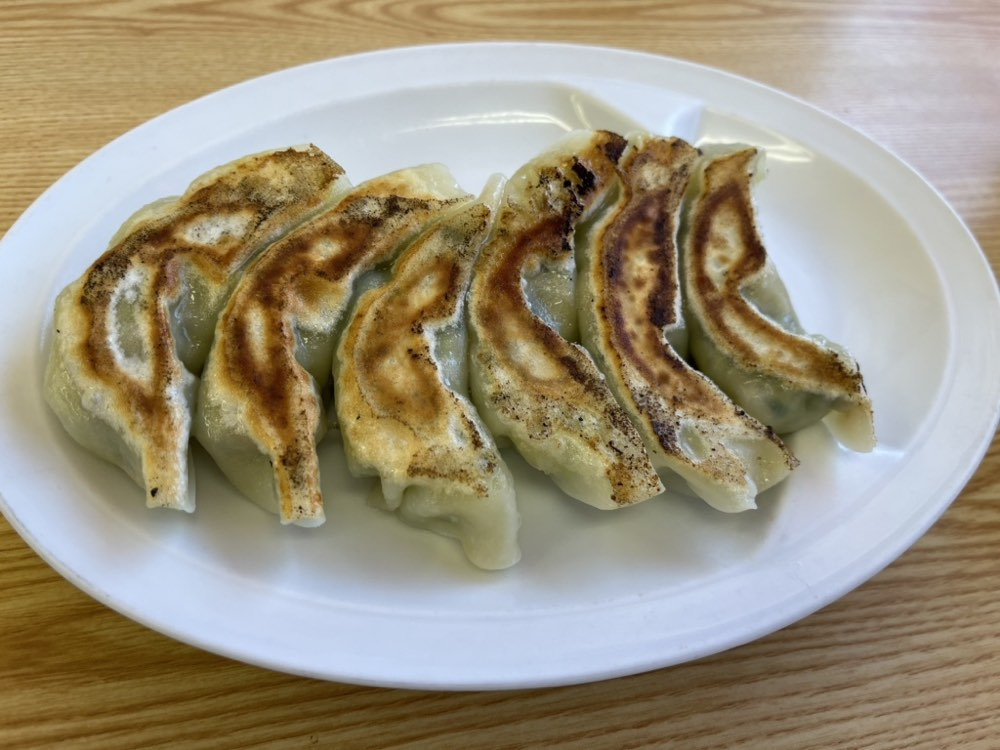
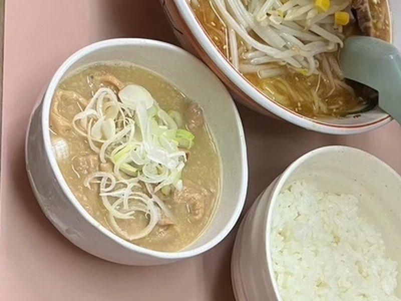
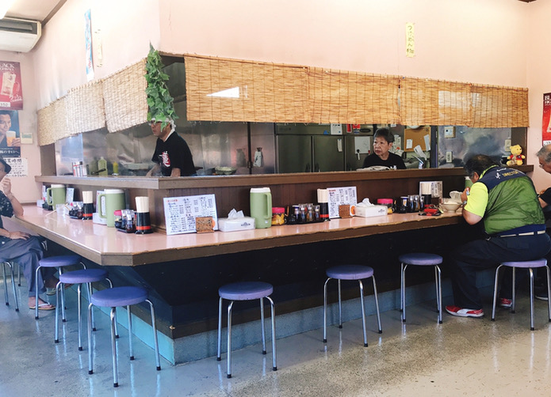
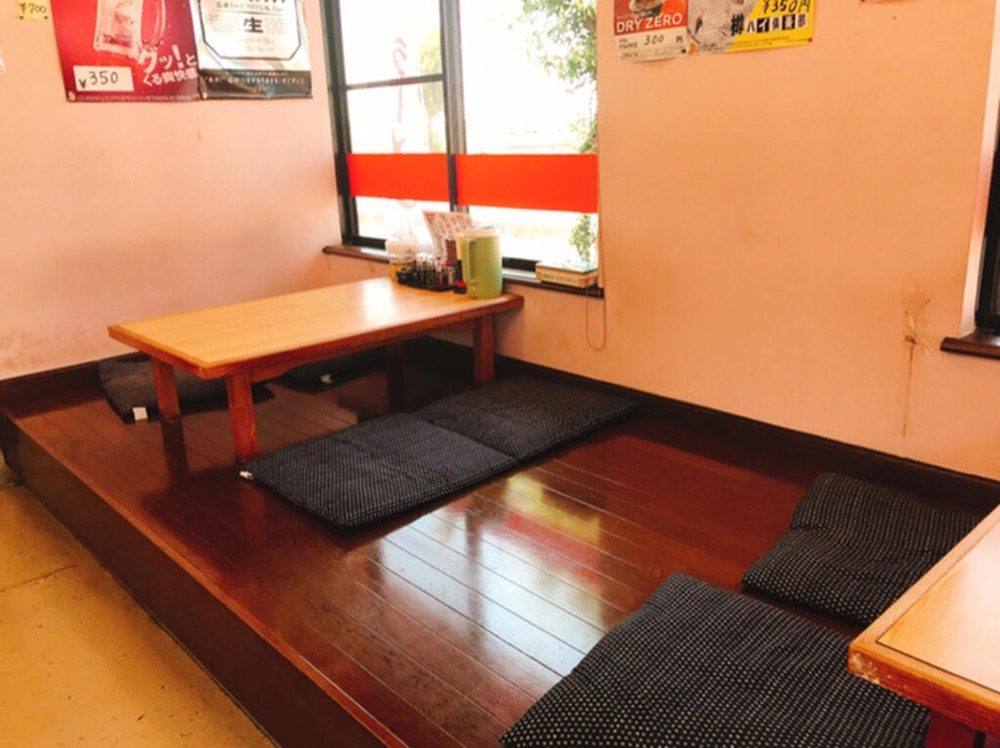
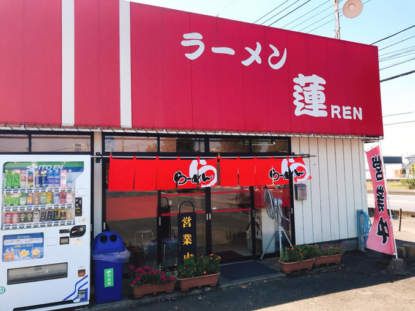

Aセット（餃子5ケ・半ライス付き）
ラーメン蓮／古河市坂間
11:00〜14:00／17:00〜20:00（月曜定休）駐車場は、隣のファミリーマートと共同でご利用いただいております。
ネギ味噌ラーメン 1,000円
スープは味噌・醤油・塩の三種。お好みでお選びいただけます。
お好きな一杯に、四〇〇円からセットをお付けします。

＋400円
餃子5ケ・半ライス

＋600円
餃子3ケ・モツ煮（ミニ）・半ライス

1,100円一式で
チャーハン・ミニ醤油ラーメン・餃子3ケ

餃子（6ケ）
400円

モツ煮
750円
おつまみチャーシューもご用意しております。お飲みものは、生中・ビンビール・缶ビール・生酒・日本酒・ジュース。
厨房を囲むL字のカウンターと、小上がりのお座敷。



| 住所 | 〒306-0056 茨城県古河市坂間93-4 |
|---|---|
| 電話 | 0280-48-2955 |
| 営業時間 | 11:00〜14:00／17:00〜20:00 |
| 定休日 | 月曜日（祝日の場合は翌火曜日） 第三月曜日・火曜日は連休 |
| 駐車場 | 隣のファミリーマートとの共同駐車場（大型車も可） |
| お支払い | 現金のみ |